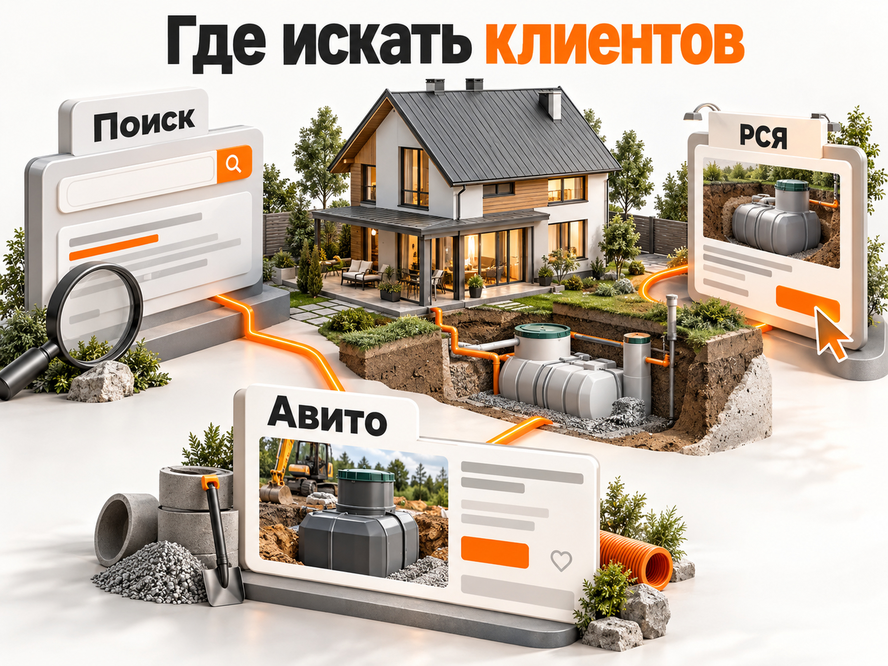
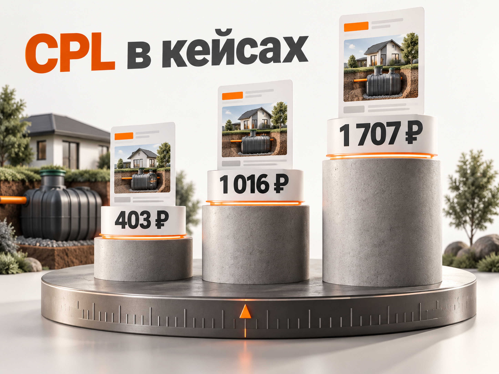
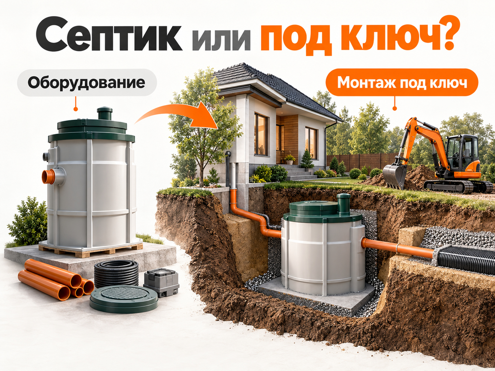

Блог о платном трафике
Реклама септиков: как привлекать клиентов и получать заявки
Для привлечения клиентов на септики я бы начинал с рекламы в Яндекс Директе по запросам на установку и монтаж под ключ. Дополнительно стоит тестировать Авито, РСЯ и развивать SEO. Основная задача - получать не просто заявки на септики, а обращения от владельцев участков, которые подходят по региону, бюджету и готовы обсуждать установку.
Для первоначального расчёта рекламы септиков в 2026 году можно использовать рабочий CPL 1 200-2 500 ₽. Это прогнозный диапазон, а не среднерыночная стоимость лида. Для теста на 50 обращений потребуется примерно 60 000-125 000 ₽ рекламного бюджета. Фактический результат будет зависеть от региона, сезона, предложения и работы отдела продаж.
В этой нише особенно важно оценивать рекламу до заключённого договора. Покупатель может сначала запросить подбор станции, затем обсудить особенности участка, согласовать замер и только после этого принять решение о монтаже.
Где рекламировать септики и искать клиентов
Для компании, которая продаёт и устанавливает септики, наиболее практичные каналы на старте - Поиск Яндекса и Авито. РСЯ подходит для расширения охвата и возврата заинтересованных посетителей. SEO помогает привлекать клиентов на этапе выбора автономной канализации.
У каждого канала своя задача и готовность аудитории к покупке.
| Канал | Каких клиентов привлекает | Когда использовать |
|---|---|---|
| Яндекс Директ, Поиск | Ищут установку, монтаж или септик под ключ | Основной канал на старте |
| РСЯ | Интересуются загородным строительством и инженерными системами | Для расширения охвата и ретаргетинга |
| Авито | Сравнивают местных установщиков, цены и предложения | Параллельный тест |
| Яндекс Карты | Ищут монтажную компанию, изучают отзывы и объекты | При наличии подходящей карточки организации |
| SEO | Выбирают оборудование, сравнивают модели и подрядчиков | Для долгосрочного привлечения |
Запускать все каналы одновременно необязательно. При ограниченном бюджете я бы сначала проверил сформированный поисковый спрос, затем Авито и только после этого расширял рекламу.
Важное различие: дешёвый контакт из Авито и дорогая заявка с Поиска могут иметь совершенно разную вероятность заключения договора.
Именно поэтому сравнивать рекламные площадки нужно не только по CPL, но и по количеству квалифицированных обращений, замеров и продаж.

Почему продвижение септиков требует отдельного подхода
Реклама септиков отличается от многих услуг тем, что покупатель часто не понимает, какое оборудование ему требуется.
Владелец дома знает количество проживающих, примерный бюджет и условия участка. Но он может не разбираться в производительности станции, типе грунта, уровне грунтовых вод, особенностях отвода очищенной воды и требованиях к монтажу.
Поэтому человеку обычно нужен не просто каталог оборудования, а подбор решения с понятной итоговой стоимостью.
При этом необходимо разделять разные типы спроса:
- Монтаж под ключ. Покупатель хочет получить готовую автономную канализацию с установкой.
- Покупка септика. Человеку требуется оборудование, возможно без монтажных работ.
- Станции биологической очистки. Покупатель изучает определённую категорию инженерных систем.
- Конкретные бренды. Пользователь уже сравнивает производителей и модели.
- Бетонные кольца и простые конструкции. Другой сегмент по бюджету, технологии и условиям монтажа.
- Откачка и обслуживание. Отдельная потребность, которая не равна установке новой системы.
Одинаковые объявления для всех направлений будут приводить смешанную аудиторию. Если компания зарабатывает на монтаже станций под ключ, заявки на покупку отдельных бетонных колец могут оказаться совершенно невыгодными.
Поэтому рекламу септиков следует сегментировать прежде всего по коммерческому намерению пользователя, а не просто по наличию слова «септик» в запросе.
Как получать качественные лиды на септики
Качественный лид на установку септика - это обращение человека, которому действительно нужна услуга компании, объект находится в рабочей зоне монтажников, а предполагаемые сроки и бюджет позволяют обсуждать сделку.
Количество отправленных форм само по себе не является показателем качества.
Рассмотрим два условных проекта с одинаковой рекламной стоимостью обращения.
В первом проекте:
- 100 заявок по 1 500 ₽;
- 60 квалифицированных лидов;
- 25 замеров;
- 10 договоров.
Рекламный бюджет составил 150 000 ₽, а стоимость договора - 15 000 ₽.
Во втором проекте:
- 100 заявок по 1 500 ₽;
- 25 квалифицированных лидов;
- 8 замеров;
- 2 договора.
При том же расходе стоимость договора составляет уже 75 000 ₽.
Оба проекта получили одинаковый CPL. Но по конечному результату разница пятикратная.

Для управления рекламой я бы фиксировал не только обращения, но и результаты квалификации, назначенные и состоявшиеся замеры, подписанные договоры, предоплаты и итоговую маржу.
Подробнее о такой аналитике я рассказывал в статье «Конверсия лида в продажу».
Сколько стоят заявки на септики: реальные кейсы 2025-2026 годов
В открытых кейсах по рекламе септиков встречаются обращения стоимостью от нескольких сотен до нескольких тысяч рублей. Но воспринимать отдельные результаты как среднюю цену лида по России нельзя.
Опубликованные проекты различаются по регионам, периоду, способу привлечения клиентов, продукту и критериям квалификации. К тому же это данные самих исполнителей рекламных кампаний, а не независимый аудит.
Кейс 1. Московская область, 2025 год
В ноябре 2025 года агентство «Нефтетрафик» опубликовало результаты трёхмесячной рекламной кампании по продаже и монтажу септиков под ключ.
| Показатель | Результат |
|---|---|
| Рекламный бюджет | 552 000 ₽ |
| Обращения | 1 369 |
| CPL | 403 ₽ |
| Квалифицированные контакты | 821 |
| Выезды на замер | 300 |
| Договоры | 75 |
| Расчётная выручка | 12,3 млн ₽ |
Если пересчитать стоимость договора по рекламным расходам:
552 000 / 75 = 7 360 ₽ за договор.
Из первоначальных обращений до договора дошло примерно 5,5%.
В проекте использовали Яндекс Директ, квиз для предварительного подбора системы, сегментацию запросов и фотографии реальных монтажей.
Авторы отмечали, что реальные строительные объекты и понятные условия установки вызывали лучший отклик, чем сложная техническая терминология и глянцевые изображения оборудования.
Но 403 ₽ за обращение - результат конкретного проекта, а не универсальный ориентир для всей ниши.
Кейс 2. Москва и Московская область, март 2026 года
В опубликованном кейсе производителя Mezler представлены следующие показатели:
| Показатель | Результат |
|---|---|
| Рекламный бюджет | 256 000 ₽ |
| Услуги подрядчика | 55 000 ₽ |
| Общие маркетинговые расходы | 311 000 ₽ |
| Обращения | 150 |
| Квалифицированные лиды | 97 |
| Оплаченные договоры | 48 |
По исходным данным публикации:
- CPL по рекламному бюджету: примерно 1 707 ₽.
- Стоимость квалифицированного лида с учётом услуг подрядчика: примерно 3 206 ₽.
- Стоимость оплаченного договора с учётом этих расходов: примерно 6 479 ₽.
Конверсия обращений в оплаченные договоры составила около 32%. Это необычно высокий показатель, поэтому использовать его как норматив для нового проекта было бы рискованно.
Кроме того, заключённые договоры и фактически завершённые монтажи - разные этапы. Сам автор кейса отмечал, что часть установок ещё предстояло выполнить.
Кейс 3. Киров, сентябрь 2025 - апрель 2026 года
В опубликованном на Workspace кейсе компании «Строй Маркетинг» показана рекламная воронка для регионального рынка септиков.
| Показатель | Результат |
|---|---|
| Рекламный бюджет | 857 150 ₽ |
| Обращения | 586 |
| Квалифицированные лиды | 328 |
| Выезды на участок | 102 |
| Договоры | 46 |
| Заявленная выручка | 7 176 000 ₽ |
Пересчёт исходных данных даёт CPL около 1 463 ₽ и рекламные расходы на договор примерно 18 634 ₽.
До договора дошли около 7,8% первоначальных обращений.
Этот пример интересен тем, что показывает воронку за пределами Москвы и Московской области. Однако длительный период включает разные сезоны, поэтому средний CPL за семь месяцев нельзя напрямую сравнивать с показателями одного весеннего месяца.
Сравнение опубликованных кейсов
| Кейс | CPL | Рекламные расходы на договор |
|---|---|---|
| Московская область, Нефтетрафик | 403 ₽ | 7 360 ₽ |
| Москва и МО, Mezler | 1 707 ₽ | 5 333 ₽ |
| Киров, Строй Маркетинг | 1 463 ₽ | 18 634 ₽ |
Для Mezler в сравнительной таблице учтён только рекламный бюджет. Если прибавить услуги подрядчика, стоимость договора увеличивается до 6 479 ₽.
Сравнение показывает, почему дешёвые заявки не гарантируют более низкую стоимость продажи. Первый проект привлекал обращения значительно дешевле второго, но по рекламным расходам на договор преимущество оказалось у второго.
Это не рейтинг эффективности агентств, поскольку условия, сроки и состав расходов различаются.

Какой CPL использовать в прогнозе рекламы септиков
Если у бизнеса нет собственной статистики, для предварительной финансовой модели я бы использовал 1 200-2 500 ₽ за обращение.
Это расчётный диапазон, а не установленная средняя стоимость заявки на септики в России.
Нижнюю границу можно использовать для благоприятного сценария, верхнюю - для более осторожного планирования. Регион, конкуренция, предложение и качество посадочной страницы способны существенно изменить результат.
При этом важно заранее разделить обычные обращения и квалифицированные лиды. Если половина заявок не подходит компании, фактическая стоимость полезного контакта окажется вдвое выше общего CPL.
После первых недель работы рекламный прогноз необходимо заменить собственными данными. Опубликованные кейсы полезны для понимания возможного разброса, но не должны становиться финансовым планом бизнеса.
Какой бюджет нужен для рекламы септиков
Тестовый бюджет на рекламу септиков нужно рассчитывать от необходимого количества обращений, а не выбирать произвольную месячную сумму.
Для первоначального теста можно поставить задачу получить 50 обращений и проверить, сколько из них проходят квалификацию и доходят до замера.
При разных расчётных CPL затраты будут следующими:
| Плановый CPL | 30 обращений | 50 обращений |
|---|---|---|
| 1 200 ₽ | 36 000 ₽ | 60 000 ₽ |
| 1 800 ₽ | 54 000 ₽ | 90 000 ₽ |
| 2 500 ₽ | 75 000 ₽ | 125 000 ₽ |
Например, если предварительно заложить стоимость заявки 1 800 ₽, то тест на 50-60 обращений потребует примерно 90 000-108 000 ₽.
При бюджете 50 000 ₽ и таком же CPL расчётно получится около 28 обращений. Этого может хватить для проверки первых гипотез, но выводы о стоимости договора будут менее устойчивыми.
Поэтому тест не обязательно должен начинаться со 100 000 ₽. Важно понимать, на какой объём данных рассчитан бюджет и какие выводы после его расходования можно сделать.
В небольшом регионе количество коммерческих запросов может ограничивать объём рекламы. Не всегда возможно эффективно израсходовать даже заранее запланированную сумму.
Отдельно следует учитывать расходы на ведение рекламных кампаний, сайт, аналитику и обработку заявок. CPL в приведённой таблице рассчитан только на рекламный бюджет.
Прогноз клиентов при бюджете 100 000 ₽ в месяц
Рекламный бюджет 100 000 ₽ может дать разное количество договоров в зависимости от CPL и конверсии обращений в продажу.
Ниже представлены три расчётных сценария. Это модель, а не статистика рынка или гарантия результата.
| Показатель | Осторожный | Рабочий | Сильный |
|---|---|---|---|
| Рекламный бюджет | 100 000 ₽ | 100 000 ₽ | 100 000 ₽ |
| CPL | 2 500 ₽ | 1 800 ₽ | 1 200 ₽ |
| Обращения | 40 | ~56 | ~83 |
| Лид в договор | 8% | 10% | 15% |
| Ожидаемые договоры | 3,2 | 5,6 | 12,5 |
| Расчётная цена договора | 31 250 ₽ | 18 000 ₽ | 8 000 ₽ |
Количество договоров в таблице выражает математическое ожидание. Фактически может быть заключено только целое число договоров, поэтому итоговая стоимость одной продажи при небольшом объёме способна заметно отклоняться от модели.
Для первоначального планирования я бы ориентировался на осторожный и рабочий сценарии.
Сильный сценарий полезен для оценки потенциала, но строить финансовый план только на лучших опубликованных результатах рискованно.
Как определить допустимую стоимость заявки на септик
Допустимый CPL определяется экономикой договора и конверсией отдела продаж.
Формула:
Допустимый CPL = допустимая стоимость привлечения договора × конверсия обращения в договор.
Допустим, компания готова тратить на привлечение одного нового договора не больше 20 000 ₽.
Если из 100 обращений заключаются 10 договоров, допустимый CPL составляет:
20 000 × 10% = 2 000 ₽.
Если отдел продаж увеличит конверсию до 15%, допустимая стоимость обращения вырастет до 3 000 ₽.
Это означает, что компания сможет конкурировать за более дорогой трафик, сохранив прежние расходы на продажу.
Но допустимую стоимость договора нужно определять с учётом маржи, постоянных и переменных расходов, стоимости привлечения и необходимой прибыли.
Иногда улучшение квалификации лидов и работы менеджеров даёт больший экономический эффект, чем попытка любой ценой снизить CPL.
Как настроить Яндекс Директ для рекламы септиков
Яндекс Директ подходит для привлечения клиентов на септики, поскольку позволяет работать с уже сформированным спросом.
В 2026 году для гибкой настройки применяется Единая перфоманс-кампания. В ней можно выбирать показы на Поиске, в РСЯ и других доступных местах размещения. Необязательно смешивать все площадки в одну кампанию.
Сначала разделить коммерческий спрос
Для компании, устанавливающей септики под ключ, я бы начал с таких групп запросов:
| Направление | Примеры запросов |
|---|---|
| Установка | установка септика, монтаж септика |
| Под ключ | септик под ключ, автономная канализация под ключ |
| Станции очистки | установка станции биологической очистки |
| Брендовый спрос | монтаж Топас, установка Астра, установка Евролос |
| Географический | установить септик в конкретном городе или районе |
Брендовые запросы следует использовать только по тем производителям, с продукцией которых компания действительно работает.
Запросы о продаже оборудования без монтажа желательно анализировать отдельно. Они могут приносить обращения, которые не соответствуют основному бизнесу установщика.
Контролировать не только ключевые фразы, но и автотаргетинг
В 2026 году недостаточно просто собрать список ключевых слов и минус-фраз.
В Единой перфоманс-кампании на Поиске используется автотаргетинг. Он подбирает запросы с учётом рекламного предложения и содержания посадочной страницы.
В актуальных настройках Яндекс позволяет управлять категориями и исключениями автотаргетинга, но полностью отключить его для кампании с поисковыми показами нельзя.
Для рекламы монтажа септиков это особенно важно из-за большого количества информационного спроса.
Например, в статистике могут появляться запросы:
- септик своими руками;
- схема септика;
- устройство септика из покрышек;
- как выкопать септик;
- чертёж автономной канализации;
- ремонт компрессора септика;
- откачка септика.
Такие запросы не всегда соответствуют услуге установки под ключ.
Однако исключать их нужно с учётом конкретного бизнеса. Если компания дополнительно продаёт оборудование, выполняет ремонт или обслуживание, часть этих запросов может быть полезной.
Поэтому минус-фразы следует формировать не только до запуска, но и по фактической статистике поисковых запросов.
Не дробить маленький бюджет на десятки кампаний
Разделять смысловые направления полезно, но создавать отдельную рекламную кампанию под каждую формулировку необязательно.
При небольшом объёме конверсий чрезмерное дробление данных осложняет обучение автоматических стратегий.
Лучше сначала выделить несколько действительно разных направлений, а затем разделять их дальше только при наличии достаточной статистики и экономического смысла.
Как учитывать географию и сезонность рекламы септиков
Для монтажной компании география определяется не только местоположением потенциальных клиентов, но и возможностью прибыльно выполнить заказ.
Если бригада работает в нескольких районах области, нет смысла одинаково оценивать заявки со всех направлений.
Необходимо учитывать расстояние до участка, стоимость доставки оборудования, расходы на транспорт и технику, загрузку монтажников и необходимость повторных выездов.
Допустим, компания получила две заявки с одинаковым CPL. Первый объект находится рядом с базой, второй требует длительной доставки оборудования и нескольких дополнительных поездок. Реальная прибыль по этим договорам может существенно отличаться.
Поэтому я бы оценивал эффективность рекламы по отдельным районам, направлениям и городам, если объём данных позволяет.
Учитывать нужно и особенности геотаргетинга Яндекса. После обновления алгоритма в 2026 году система использует более широкий контекст местоположения и интереса пользователя к региону. Увидеть рекламу могут в том числе люди, которые находятся за пределами выбранной территории, но планируют заказать там услугу.
Для септиков такой пользователь не обязательно нецелевой. Например, владелец дачи может искать монтажную компанию, находясь в другом городе. Важна география самого объекта установки.
Сезонность
В регионах с холодной зимой основной объём земляных работ обычно приходится на тёплое время года. В средней полосе условным активным периодом можно считать апрель-октябрь, но фактический сезон зависит от погоды, грунта и возможностей подрядчика.
На юге монтаж может выполняться значительно дольше.
При планировании рекламы нужно учитывать:
- начало строительного сезона;
- изменение спроса и конкуренции;
- загруженность монтажных бригад;
- возможность выполнить договор в обещанные сроки;
- спрос на обслуживание существующих систем вне основного сезона.
Увеличивать рекламный бюджет в пик сезона имеет смысл только в том случае, если компания способна обрабатывать дополнительные обращения и выполнять заказы.
Примеры рекламных объявлений для септиков
Хорошее объявление для установки септиков должно сразу объяснять, какую задачу решает компания и что входит в предложение.
Вместо общего текста «Качественные септики по низким ценам» полезнее использовать конкретное коммерческое намерение.
Вариант для установки под ключ
Заголовок: Установка септика под ключ
Текст: Подберём автономную канализацию для дома с учётом участка. Рассчитаем стоимость оборудования и монтажа.
Такое объявление соответствует запросам на комплексную установку и не создаёт впечатления, что рекламируется только оборудование.
Вариант для подбора станции
Заголовок: Подбор септика для частного дома
Текст: Поможем выбрать станцию по числу проживающих и условиям участка. Подготовим предварительную смету.
Здесь основной акцент сделан на решении задачи клиента, который ещё не определился с моделью.
Это примеры формулировок для тестирования, а не объявления с подтверждённой эффективностью.
В реальном проекте я бы подготовил несколько вариантов с разными акцентами: стоимость под ключ, подбор оборудования, реальные выполненные работы, гарантия, сроки монтажа и география.
Обещания конкретной цены, сроков или гарантии должны соответствовать фактическим условиям компании.
Что должно быть на сайте для привлечения клиентов на септики
Посадочная страница должна помогать человеку выбрать подходящее решение и понимать ориентировочную полную стоимость установки.
Для септиков особенно важно отделить стоимость самого оборудования от цены работ под ключ.
Например, если в объявлении говорится о монтаже автономной канализации, а на сайте крупно указана только цена станции, потенциальный покупатель может неправильно оценить будущие расходы.
Полная смета способна включать:
- стоимость станции или септика;
- доставку;
- подготовку котлована;
- монтаж корпуса;
- прокладку труб;
- необходимые комплектующие;
- подключение и пусконаладочные работы;
- дополнительные работы с учётом условий участка.
Состав работ зависит от выбранной системы. Поэтому понятнее показывать не одну минимальную цену, а несколько примеров комплектации с объяснением, что включено.

Какие блоки нужны посадочной странице
Я бы предусмотрел:
- Понятный оффер с указанием услуги и рабочей географии.
- Подбор системы с учётом условий участка.
- Ориентиры стоимости оборудования и монтажа.
- Примеры реальных выполненных объектов.
- Объяснение этапов установки.
- Информацию о гарантиях и подрядчике.
- Условия выезда инженера.
- Простой способ запросить расчёт.
Особое внимание стоит уделить фотографиям реальных объектов. Они помогают показать масштаб земляных работ, используемое оборудование и результат монтажа.
Нужен ли квиз
Квиз может быть полезным инструментом для предварительного подбора септика.
Человек отвечает на несколько вопросов и получает возможность запросить расчёт подходящей системы.
Вопросы могут касаться:
- типа объекта;
- количества проживающих;
- постоянного или сезонного использования;
- местоположения участка;
- планируемых сроков монтажа.
Не стоит требовать от человека точных технических характеристик, которых он может не знать.
Например, уровень грунтовых вод лучше уточнять при общении со специалистом, если у владельца участка нет достоверной информации.
При этом квиз не обязательно эффективнее обычной страницы с короткой формой. Выбирать формат нужно по результатам теста, а не потому, что он использовался в успешном чужом кейсе.
Как квалифицировать заявки на установку септика
Квалификация помогает отделить потенциальных заказчиков от обращений, которые не соответствуют услуге компании.
Для монтажного бизнеса это особенно важно, поскольку каждый выезд инженера требует времени и дополнительных расходов.
До назначения замера менеджеру желательно выяснить:
- где находится объект;
- какой тип здания требуется обслужить;
- сколько человек будет пользоваться системой;
- нужно ли оборудование с монтажом;
- какие сроки планирует клиент;
- соответствует ли запрос ценовому сегменту компании.
После разговора обращению можно присвоить понятный статус: целевой лид, нецелевой лид, требуется уточнение, назначен замер.
Критерии должны быть одинаковыми для всех менеджеров.
Иначе рекламный специалист будет получать противоречивую информацию, а автоматическая оптимизация станет менее точной.
Подробнее причины некачественных обращений разобраны в статье «Нецелевые лиды из Яндекс Директа».
Как передавать качественные лиды обратно в Яндекс Метрику
Для оценки рекламы септиков недостаточно учитывать только отправленные формы.
Если в CRM известны результаты обработки обращений, эти данные полезно передавать в Яндекс Метрику в виде офлайн-конверсий.
Яндекс позволяет учитывать события, которые происходят после посещения сайта, например заключение договора или оплату. Такие данные доступны для анализа и оптимизации рекламы.
Я бы выделил несколько этапов:
- Первичное обращение.
- Квалифицированный лид.
- Состоявшийся замер.
- Подписанный договор.
- Оплата.
Но выбирать цель оптимизации нужно с учётом объёма статистики.
Если реклама приносит только несколько договоров за месяц, оптимизация непосредственно на договор может испытывать недостаток данных. В таком случае разумно сначала использовать более частую и при этом качественную промежуточную цель.
Яндекс рекомендует для обучения стратегии выбирать достаточно частые цели. В справке в качестве ориентира указано не менее 10 достижений цели в неделю.
Если нужных событий мало, стоит пересмотреть структуру кампаний и цели, а не просто переключать оплату на конверсии.
Настройку передачи данных я подробнее разбирал в статье «Офлайн-конверсии в Яндекс Директе».
Когда подключать РСЯ и Авито
РСЯ и Авито могут дополнять Поиск Яндекса, но их эффективность нужно проверять по собственной воронке до договора.
РСЯ
РСЯ подходит для работы с аудиторией, которая интересуется строительством, обустройством дома или инженерными системами, но не обязательно прямо сейчас ищет установщика.
Здесь можно тестировать фотографии реальных монтажей, подбор оборудования, расчёт автономной канализации и ретаргетинг на посетителей сайта.
Поиск и РСЯ лучше анализировать отдельно. Даже при одинаковой стоимости заявки качество обращений может существенно отличаться.
Авито
Авито подходит для локального монтажного бизнеса, поскольку позволяет показывать предложения людям, сравнивающим установщиков и стоимость работ.
Я бы тестировал объявления по разным услугам и направлениям:
- установка септиков под ключ;
- монтаж автономной канализации;
- продажа септиков с установкой;
- установка станций биологической очистки.
В объявлении полезно показывать реальные работы, условия монтажа, пример комплектации и географию обслуживания.
При этом сообщения и просмотры объявлений не равны качественным лидам. Стоимость продажи нужно считать по тем же правилам, что и в Яндекс Директе.
Подробное сравнение есть в статье «Авито или Яндекс Директ».
Какие показатели рекламы септиков контролировать
Для управления рекламой недостаточно знать общий рекламный расход, количество заявок и CPL.
Я бы использовал таблицу или CRM-отчёт с такими показателями:
| Показатель | Что помогает оценить |
|---|---|
| Рекламные расходы | Сколько вложено в привлечение |
| Обращения | Общий объём лидов |
| CPL | Стоимость первичного обращения |
| Квалифицированные лиды | Качество поступающего трафика |
| Стоимость квалифицированного лида | Расходы на полезное обращение |
| Назначенные и состоявшиеся замеры | Продвижение клиента по воронке |
| Договоры | Количество продаж |
| Стоимость договора | Расходы на привлечение продажи |
| Выручка | Денежный результат |
| Маржа | Экономическая эффективность |
Дополнительно нужно видеть данные отдельно по рекламным каналам, регионам, основным направлениям спроса и посадочным страницам.
Особенно полезно фиксировать причины отказов: неподходящая география, низкий бюджет, неправильная услуга, отложенная покупка или проигрыш конкуренту.
Именно эта информация помогает определить, на каком этапе теряются потенциальные клиенты.
Основные ошибки при продвижении септиков
Оценивать рекламу только по CPL. Дешёвые заявки могут плохо превращаться в договоры.
Смешивать разные направления. Продажа оборудования, монтаж под ключ и откачка септиков отличаются аудиторией и экономикой.
Показывать только минимальную цену. Клиенту важно понимать стоимость всей системы с установкой, а не одного корпуса.
Использовать слишком широкую семантику. Информационные и технические запросы могут расходовать бюджет без подходящих обращений.
Не учитывать географию установки. Заявка из неподходящего района может оказаться невыгодной независимо от CPL.
Отправлять инженера на каждый контакт. Без предварительной квалификации растут расходы на обработку обращений.
Не передавать статусы лидов в аналитику. Рекламные алгоритмы не получают информацию о качестве заявок.
Масштабировать рекламу без учёта загрузки монтажников. Дополнительные лиды не принесут пользы, если компания не может выполнить заказы в согласованные сроки.
Пошаговый план запуска рекламы септиков
Для первого запуска я бы использовал следующий порядок.
- Определить основную услугу: продажа оборудования, установка, монтаж под ключ или обслуживание.
- Зафиксировать рабочую географию и реальные возможности монтажных бригад.
- Рассчитать допустимые расходы на привлечение одного договора.
- Разделить основные коммерческие запросы по намерению пользователя.
- Подготовить посадочную страницу с понятным предложением и стоимостью под ключ.
- Настроить Яндекс Метрику, отслеживание звонков и передачу заявок в CRM.
- Запустить Поиск по сформированному коммерческому спросу.
- Проверять реальные поисковые запросы, стоимость лидов и причины отказов.
- Подключать РСЯ и Авито по мере необходимости, оценивая каждый канал отдельно.
- После накопления данных сравнить стоимость квалифицированного лида и договора, затем перераспределить бюджет.
На старте важнее проверить качество спроса и экономику, чем добиться минимально возможной стоимости заявки.
Итог
Для привлечения клиентов на септики в 2026 году я бы начинал с рекламы установки под ключ в Яндекс Директе. Авито и РСЯ могут расширять охват, а SEO полезно для долгосрочного продвижения.
Для предварительного теста можно использовать расчётный CPL 1 200-2 500 ₽. При планировании 50 обращений бюджет составит 60 000-125 000 ₽ без учёта услуг подрядчика. Это не гарантированный результат, а финансовая модель, которую необходимо уточнять по собственной статистике.
Главный показатель эффективности рекламы септиков - не стоимость отправленной формы, а стоимость договора и прибыль, которую приносит выполненный заказ.
Если нужен системный запуск Яндекс Директа с аналитикой заявок и продаж, можно обсудить проект со мной.